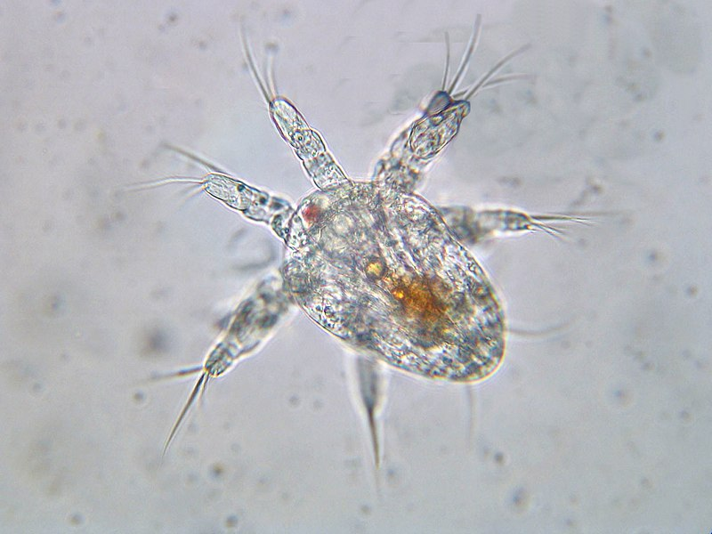

Los crustáceos (Crustacea; del latín crusta,
"costra" y aceum, "relación o naturaleza de algo") son un
extenso subfilo de artrópodos que incluye a animales como langostas, cangrejos, y krill.
Como casi todos los artrópodos, los crustáceos se caracterizan por poseer un exoesqueleto articulado, el
cual les brinda soporte y protección. A medida que crecen deben mudar su exoesqueleto en un proceso
llamado muda, para poder crecer y adaptarse a su tamaño corporal en constante cambio.
Los crustáceos son los únicos artrópodos con dos pares de antenas, tienen al menos un par de maxilas y tienen múltiples pares de apéndices, como patas y pinzas, que utilizan para desplazarse, alimentarse y defenderse. Algunos crustáceos, como los cangrejos ermitaños, tienen la habilidad de adaptarse y cambiar de concha a medida que crecen, utilizando conchas abandonadas de otros animales para proteger su cuerpo blando.
La alimentación de los crustáceos es diversa; algunos son filtradores, como los pequeños camarones que se alimentan de partículas en suspensión en el agua, otros son depredadores o carroñeros, como los cangrejos y langostas que se alimentan de moluscos, peces muertos u otros organismos marinos, y también hay crustáceos herbívoros que se alimentan de algas y detritos.

La mayoría de los crustáceos se reproduce sexualmente. En los
casos que no hay reproducción sexual, la hembra produce huevos viables sin necesidad de fertilización
por un macho.
Algunas especies tienen un ciclo de vida complejo, donde las crías eclosionan de huevos y pasan por
varias etapas larvarias antes de convertirse en adultos.
Una característica propia del grupo es la presencia de la larva nauplio, provista de un ojo naupliano en
alguna etapa de su vida, que puede ser sustituido más tarde por dos ojos compuestos.
Estas criaturas son vitales en los ecosistemas acuáticos. Muchos crustáceos, como los copépodos y krill, son una fuente importante de alimento para peces y otros animales marinos. Además, algunos crustáceos, como los camarones limpiadores, desempeñan un papel crucial en la limpieza de parásitos de otros peces, manteniendo así la salud de las poblaciones marinas.